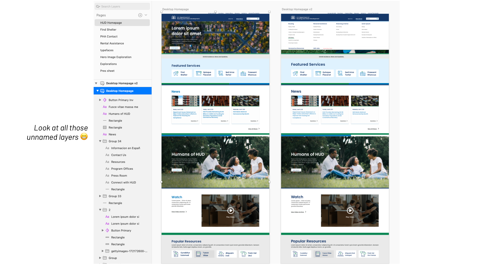
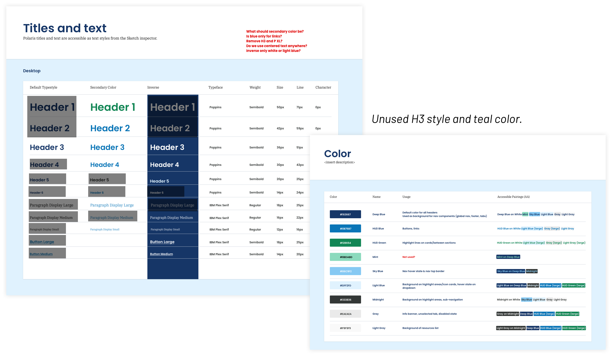

<!DOCTYPE html>
<html lang="en">

<head>
	<title>Emily Porat | Federal Design System</title>
	<link rel="stylesheet" type="text/css" href="styles/global.css">
	<link rel="stylesheet" type="text/css" href="styles/global-mobile.css">
	<link rel="stylesheet" type="text/css" href="styles/nav.css">
	<link rel="stylesheet" type="text/css" href="styles/projects.css">
	<script src="https://ajax.googleapis.com/ajax/libs/jquery/1.9.1/jquery.min.js"></script>
	<link rel="icon" type="image/x-icon" href="pics/favicon.svg"/>
	<!-- Icons -->
	<script defer src="https://use.fontawesome.com/releases/v5.13.0/js/all.js"></script>
	<script defer src="https://use.fontawesome.com/releases/v5.13.0/js/v4-shims.js"></script>
	<!-- Global site tag (gtag.js) - Google Analytics -->
	<script async src="https://www.googletagmanager.com/gtag/js?id=UA-119412150-1"></script>
	<script>
		window.dataLayer = window.dataLayer || [];
		function gtag(){dataLayer.push(arguments);}
		gtag('js', new Date());

		gtag('config', 'UA-119412150-1');

      // load other reused files
      $(function() {
      	$('#nav').load('http://emilyporat.com/nav.html');
      	$('#footer').load('http://emilyporat.com/footer.html');
      });
  </script>
</head>

</html>
<body class="preload">
	<meta name="viewport" content="width=device-width">
	<div id="nav"></div>
	<div id="arrow-up" onclick="slideUp()"><i class="fa fa-angle-up"></i></div>	

	<div class="full-width" style="background-color: var(--green);">
		<div class="title-wrapper animate-reveal animate-first">
			<div class="title">
				<div>
					<h4>2021 • Deloitte Digital • Housing</h4>
					<h1 style="color: black">Federal Design System</h1>
				</div>
			</div>
		</div>

		
	</div>

	<div class="panel context">
		<div class="context-summary">
			<h2>Project Overview</h2>
			<p class="p-XL">
				The client's consumer-facing website was difficult to navigate and visually dated, which degraded user trust for consumers who want reliable information on housing assistance opportunities.
			</p>
			
			<div class="space"></div>
			
			<h3>Approach</h3>
			<p>
				Our team created a clean, modern version of the agency's homepage and a few select high-traffic pages.
			</p>
			
			<div class="space"></div>

			<h3>Outcome</h3>
			<p>
				We ultimately passed off 4 responsive mockups to a contractor for development. 
			</p>

<!-- 			<p>I was brought in to organize and ensure consistency across the work another Visual Designer had already done. I built and organized over 200 scalable, custom symbols, text styles, and layer styles utilizing atomic design principles.</p> -->
<!-- 			<div class="short-divider"></div>
			<p>	
				This client wanted a visual facelift before launching into a full redesign. The goal of this shorter-term effort was to create a clean, modern version of the agency's homepage and a few select high-traffic pages with the ultimate goal of using the new pages as templates for future redesign.
			</p>

			<p>
				I was brought in to organize and ensure consistency across the work another Visual Designer had already done. The Visual Designer I worked with had an excellent creative vision and illustration skills (not my strong suit), but was moving quickly and hadn't created any symbols or organized his files. Believe it or not, I relish in these kinds of organizational tasks, so it was a match made in heaven.
			</p> -->

<!-- 			<p><em style="font-weight: 900">4 min read time</em></p> -->

		</div>

		<div class="context-specifics">
			<h4>Team</h4> 
			<div class="context-description"><p>Me, Visual Designer, Creative Director, Contractor (Developer)</p></div>

			<h4>Role</h4> 
			<div class="context-description"><p>I audited the mockups a Visual Designer had created and built + organized over 200 scalable, custom symbols in Sketch. This was 100% UI work.</p></div>

			<h4>Responsibilities</h4> 
			<div class="context-description"><p>Component Audit, Design Systems, Symbols & Organization</p></div>

			<h4>Tools</h4>
			<div class="context-description"><p>Sketch, InVision, Abstract</p></div>
			
			<h4>Length</h4>
			<div class="context-description"><p>2 months</p></div>


		</div>
	</div>

	<div class="full-width-mid-page">
		<div class="panel dark" style="background-color: var(--green)">
			<div class="mid-panel-text">
				<h4>My Objective</h4>
				<h2 style="color: black">Clean up the design files and build a comprehensive symbol library so we could hand the files off to developers.</h2>
			</div>
			
		</div>
	</div>

	<div class="panel" id="Component Audit">
		<h2 class="body right">Process</h2>
			<div class="body right">
				<p class="p-XL">I owned the following activities over the course of 2 months:</p>
				
				<div  class="space"></div>

				<div class="small-highlight"> <h3>Component Audit</h3>
				<p><b style="font-family: 'Barlow Medium'">Goal:</b> Find visual inconsistencies and gaps to resolve.</p></div>

				<div  class="space"></div>

				<div class="small-highlight"><h3>Component Library & Organization</h3>
				<p><b style="font-family: 'Barlow Medium'">Goal:</b> Create a component library that is easy for future designs to understand, use, and update.</p></div>

				<div  class="space"></div>

				<div class="small-highlight"><h3>Grids & Responsive Screens</h3>
				<p><b style="font-family: 'Barlow Medium'">Goal:</b> Ensure that the 4 screens we were designing would look exactly as we intended on all screen sizes.</p></div>

			</div>
	</div>

	<div class="panel" id="Component Audit">
		<h2 class="body right">Component Audit</h2>
			<div class="body right">
				<p class="p-XL">First, I took stock of all the components, text styles, and colors.</p>
				<div class="space"></div>
				<h3>Ensuring consistency & accessibility</h3>
				<p>I took note of which styles were used consistently and which were not, as well as general usage patterns and gaps. I also checked all color combos for contrast accessibility and noted all acceptable pairings for our reference.</p>

				

				<!-- <p>On the component level, I looked across all pages for inconsistencies and gaps, especially for mobile design. I found some small issues with different shades of gray, type styles for forms, and components that had no mobile counterparts.</p> -->

<!-- 				 -->

				<div class="so-what">
					<h4>So what?</h4>
					<p>This exercise helped me pinpoint which styles and components were <em>actually</em> used and which were not, as well as which components were missing.</p>
				</div> 				
			</div>
	</div>
 
	<div class="panel" id="Symbol Creation">
		<h2 class="body right">Component Library & Organization</h2>
			<div class="body right">
				<p class="p-XL">After discussing the audit findings with my Visual Design counterpart, we aligned on which styles I'd add, remove, and tweak. I began symbolizing components and adding text & layer styles. </p>
				
				<div class="space"></div>
				<h3>Creating scalable, usable symbols</h3>
				<p>My goal when creating symbols is always to make them as easy as possible to work with for the end user (aka fellow designers). I'm super cognizant of using helpful labels, making symbols scalable, and nesting symbols so that overrides are easy.
				</p>

				
				
				<div class="space"></div>
				<h3>Atomic design & organization</h3>
				<p>I used atomic design principles to organize my symbols as I created them, dividing components into "Atoms," the smallest possible unit of a component, "Molecules," partial components that combine more than one Atom, and "Organisms," or full-blown components that incorporate multiple Molecules. </p>
				<p></p>
				
				<div class="so-what">
					<h4>Why Atomic?</h4>
					<p>With a relatively small collection of components, this organization strategy made finding everything quick and easy. I love atomic design because it provides the ease of designing top-down <em>or</em> bottom up.</p>
				</div> 
				
				

			</div>
	</div>

	<div class="panel" id="Symbol Creation">
		<h2 class="body right">Grids & Responsive Design</h2>
			<div class="body right">
				<p class="p-XL">Because we were only designing 4 pages, I wanted to ensure that they would look exactly as we intended on all screen sizes, so I mocked up each page for the 4 standard breakpoints.
				</p>

				
				<h3>Grids</h3>
				<p>I also documented the grids I was using for each screen size for easy reference and future development. While most inspect tools allow devs to view these underlying grids, I wanted to make it crystal clear, as I've encountered issues with this in the past.</p>

				
			</div>
	</div>

	<div class="panel" id="Symbol Creation">
		<h2 class="body right">Outcome</h2>
			<div class="body right">
				<p class="p-XL">As of March 2021, a contractor is developing these pages. Eventually the entire site will use these templates.
				</p>
				
				<div class="space"></div>
				
				<div class="small-highlight"><h3>Takeaway #1: Learning from each other</h3>
				<p>Apart from creating an organized design system, I also walked through this process with the Visual Designer and Creative Director I worked with and showed them the ropes so that they can integrate atomic design principles into future work. On the other hand, I learned a lot from my Visual counterpart about his creative process.</p></div>
				
				<div class="space"></div>
				
				<div class="small-highlight"><h3>Takeaway #2: Igniting my passion for organization</h3>
				<p>All in all, this project really ignited my love for organization and design systems. At first, it was odd to me that I'm so passionate about research synthesis <em>and</em> UI/design systems, but I've realized that my type-A sensibilities cut across the UX spectrum. Both ends of that spectrum are all about making sense of chaos, which I excel at. ✨</p></div>
			</div>
	</div>


	  	
  	<div id="footer"></div>
  	</meta>
  </body>

  <script src="js/general.js"></script>

</html>